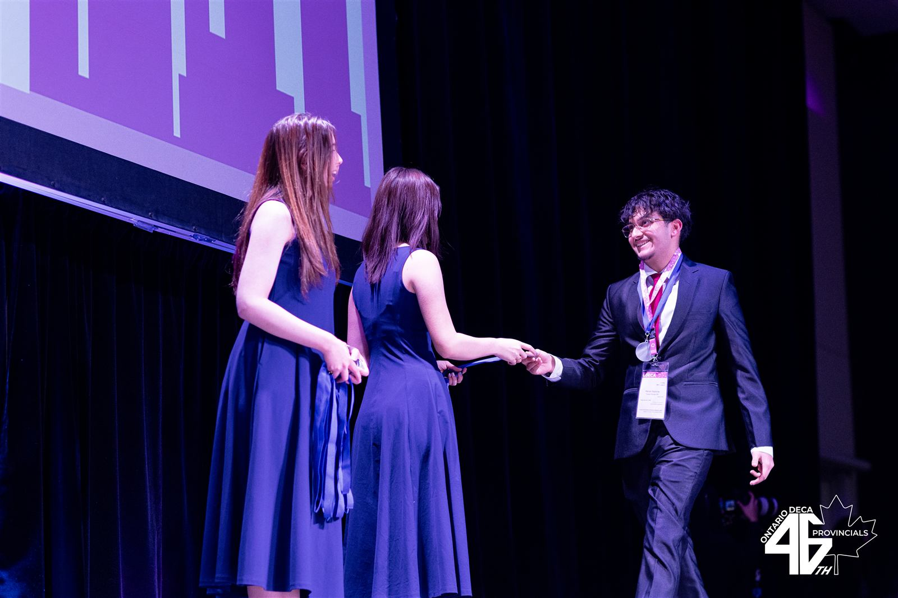
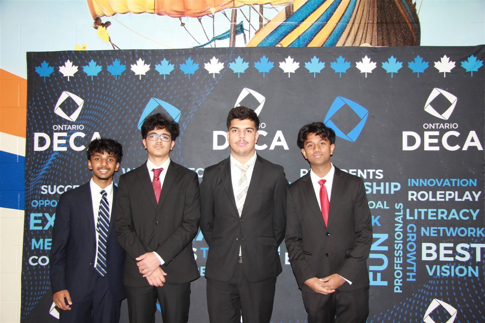
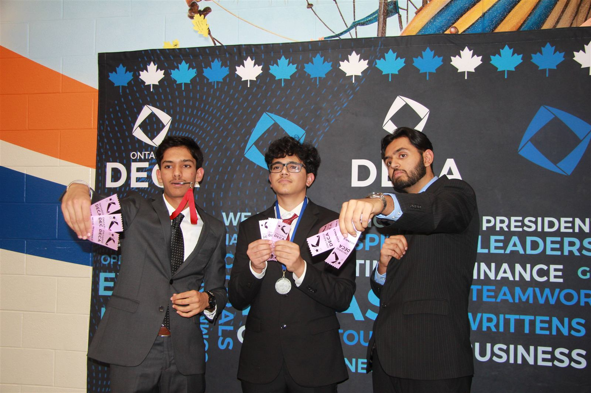
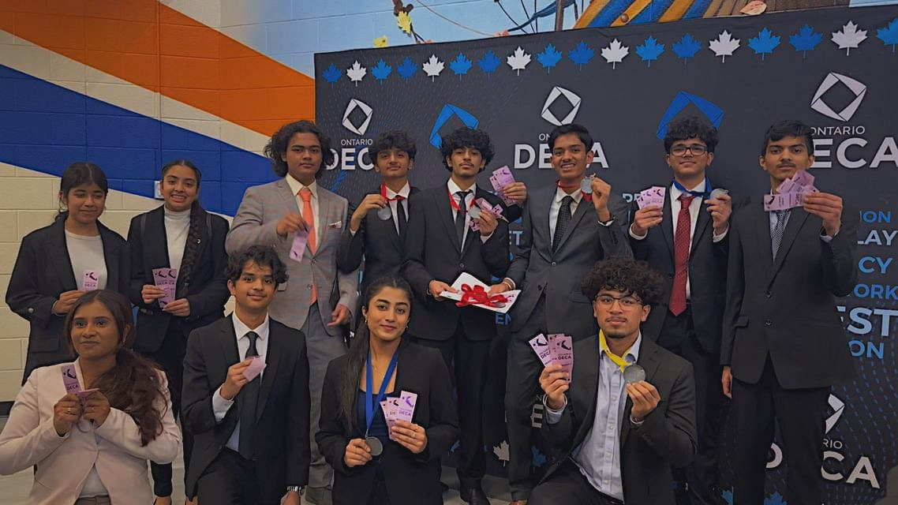

Founded in 2013 at Turner Fenton Secondary School, our chapter has grown into one of Ontario DECA's largest and most accomplished. Built one competition, one mentor, and one mock trial at a time.
Turner Fenton DECA exists to prepare emerging leaders and entrepreneurs for careers in marketing, finance, hospitality, management, and entrepreneurship. We do this through competitive events, real-world case studies, and a peer-mentorship culture where experienced competitors teach the next generation.
Each year, more than 400 students apply for roughly 100 seats in the chapter. Members train year-round, compete at Regionals and Provincials, and (for our top performers) represent Turner Fenton at the International Career Development Conference (ICDC).
Since 2017, the chapter has earned over 1,500 regional and provincial awards and qualified more than 100 students for ICDC, including multiple international champions.




Every year, Turner Fenton DECA runs a school-wide mock DECA competition open to any student at Turner Fenton, not just chapter members. Participants get a hands-on introduction to DECA's roleplay format: a business scenario, prep time, and a live presentation in front of judges drawn from our executive team.
It's the single biggest on-ramp into the chapter each year, giving new applicants real practice before entrance exams and giving our teaching coordinators a chance to spot rising talent early.
Since our founding, we've built a track record few Ontario chapters can match.
Turner Fenton DECA is established at Turner Fenton Secondary School in Brampton, Ontario.
The chapter enters a sustained run of competitive success, launching what is now over 1,500 regional and provincial awards earned since.
148 provincial awards, 38 ICDC qualifiers, and 29 international awards (including 2 world champions) mark one of the chapter's most decorated seasons.
40 provincial awards and 8 ICDC qualifiers keep the chapter among Ontario DECA's top performers. The class of 2025 also produced a world champion, with 10 additional provincial awards recognizing top performances across events.
Over 100 members compete across five event clusters, backed by a community of 1,200+ followers and a new generation of executive leadership.
Explore the five competitive event clusters that make up the DECA experience.
View Competitive Events